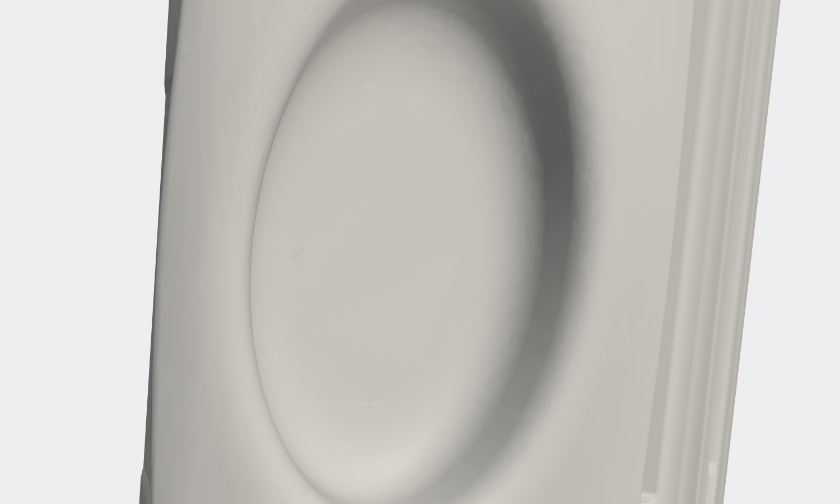
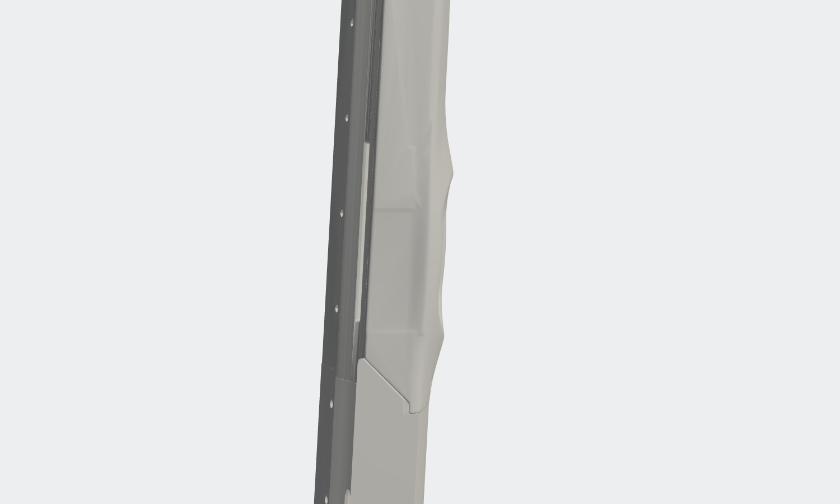
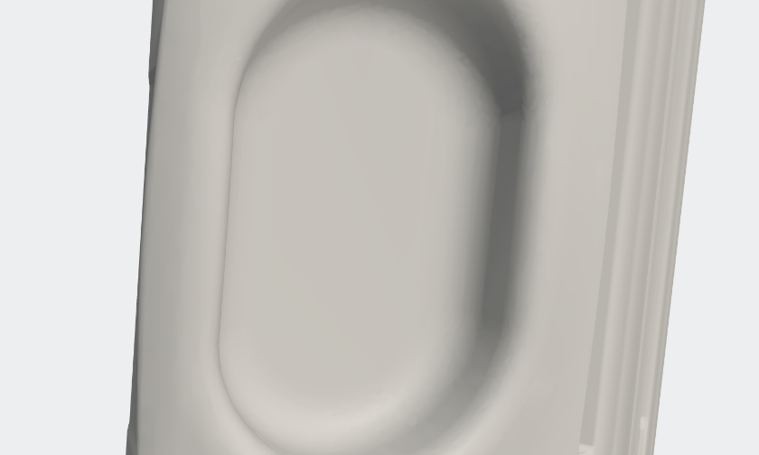
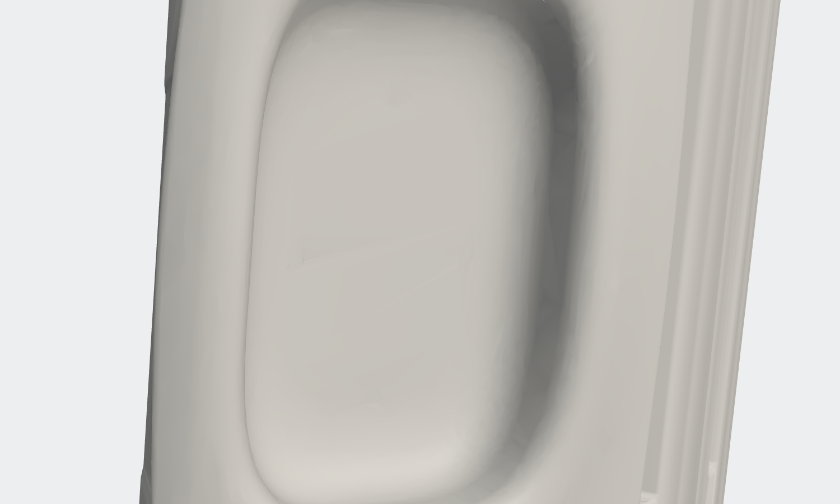
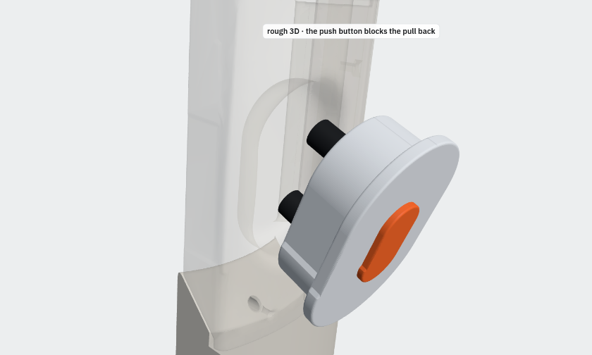

Side pad: the "exhaust-tip" side mount
A look study. The mount sits in a slightly extended wing tip on the parent's (outer) side, as a rounded mouth like a car exhaust in a bumper. All the mechanics are inside. From the front there is no opening, only a natural swell of the wing. Shown on the real chair (Onshape round-5 wing with its old notch filled), left side.
1 · Three mouth shapes
Each mouth is about 30 (front-to-back) × 50 (tall) mm, centred at the old mount height. The r5 wing's square mount slab is gone: the tip now stands about 6 mm proud of the wing's normal face in one smooth swell that blends into the face and runs into the front edge. The lip is rolled (R ≈ 2.5) and the pocket has a smooth, rounded floor. CLEARANCES Kit on: the plug fills the pocket, a trim collar seats on the lip, and an orange stadium push button sits in the collar's centre. The arm leaves the collar's front, runs round the front edge and goes to the pad, inside the arm-rest line ARMX.
Approximate: the lock inside is TBD (not modelled; see section 2). The arm is a sweep of the 22 × 31 section along a simple curve. The swell, lip and pocket come from a 0.25 mm distance field (smoothed), rebuilt over the whole wing tip. The raised panel edge higher up (about z 292) is the CAD wing's own, unchanged. The collar and button are mock solids.











All 27 stills (6 kit-off and 3 kit-on views per shape) are in exhaust/shots/.
2 · How it locks: options (rough 3D)
The plug goes in sideways, so a child's outward lean pulls along the plug's axis. In each option the plastic carries that lean, and the push button only locks. The wing is shown see-through. Blue: the lock parts on the plug. Tan: the matching features in the wing. Black: the optional Ø8 carbon prongs (toggle).



| 1 · Hook-and-drop | 2 · Quarter-turn | 3 · Slanted plug | |
|---|---|---|---|
| Motion | push in sideways, drop 8 mm, click; release: press, lift, pull | push in, turn 20–30°, click; release: press, turn back, pull | push in on the slant, click; release: press, pull |
| One-handed, for a parent | yes; gravity seats it | awkward: the whole arm and pad turn with it (or it needs a separate turning collar) | yes, the simplest motion |
| Lean path (estimate) | hook ledge in shear, ≈ 5+ at a 300 N lean (hand estimate) | two lugs in shear, ≈ 4–5 (hand estimate) | a lean presses it in, but a knock the other way pulls it out against the latch: depends on the angle (not estimated) |
| Looks | same mouth; 8 mm of drop room hidden by the collar | same mouth | the mouth is tilted, reads less calm |
| Print complexity | a ledge inside the pocket (an overhang: needs a 45° roof) | two L-slots inside the pocket (hard to print and clean) | a plain angled pocket |
Recommendation: hook-and-drop. It works one-handed, gravity holds it home, and the hook carries the lean in plastic. The quarter-turn swings the pad, and the slanted plug only protects against a lean in one direction.
Rough 3D: the plug, hook, lugs, slots and prongs are simple shapes placed by hand to show the idea; strength figures are hand estimates.